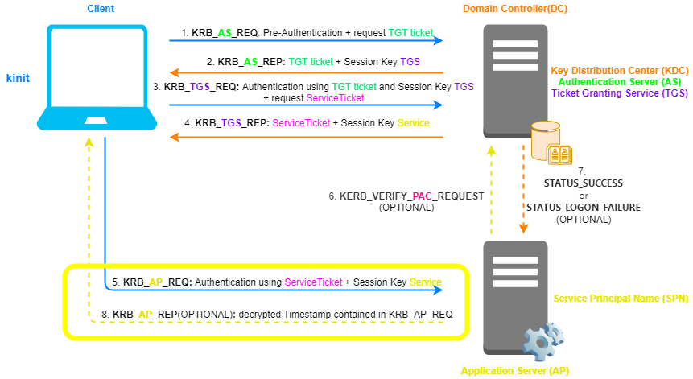

Silver Ticket
Silver TicketsSilver Tickets are
forged
ServiceTickets(Golden Tickets are
TGT) in KRB_
AP_REQ with a custom
PAC(to escalate privileges)
Silver Tickets are more easy to obtain than Golden
Tickets that require to compromise the
krbtgt account.
Forge
the ServiceTicket in
KRB_AP_REQIf an Attacker is
been able to extract the Password of a
Service Account(as seen in the
Kerberoasting
vulnerability), he can then forge a
ServiceTicket with a custom
PAC.
• The
ServiceTicket is encrypted with
the
Service Account secret key.
•
PAC(authorization-data) that is inside the
ServiceTicket: This
PAC is used for verification
by the
Service in an optional step
As seen in the
explanation
of Kerberos,
PAC is signed with two keys(
ietf.org),
this mean
PAC contain two checksum:
▪ signed with the
target Service secret key (PAC_SERVER_CHECKSUM)→
Service secret Key ▪ signed with the
KDC(krbtgt account) secret key
(PAC_PRIVSRV_CHECKSUM)
The problem and the resolution• The problem is that we do
not have the
KDC(krbtgt account) secret key
that we need to double sign the
PAC to create the PAC_PRIVSRV_CHECKSUM.
•
The resolution is that, "luckily for us"(perspective of an Attacker),
PAC validation of the checksums(
PAC_SERVER_CHECKSUM and
PAC_PRIVSRV_CHECKSUM)
with KERB_VERIFY_
PAC_REQUEST from the
Service to the
KDC is usually disabled if the
the Silver Ticket is less than 20 minutes old
Which Service Accounts Target?Services that use(or run) Computer Accounts as the Service Accounts. These are
Services that run on a machine.
We can find a complete list of SPNs
HEREexamples:
| Service Type |
Service Silver Tickets needed |
To gain ... |
| Windows File Share |
CIFS |
to gain admin rights to any Windows share on the target computer |
| Windows Computer |
HOST |
to gain admin rights to any Windows service covered by “host” on the target computer. This includes the
ability to modify and create scheduled tasks. |
| PowerShell Remoting |
HOST
HTTP
Depending on OS version, also:
WSMAN
RPCSS |
to open a a shell to the target system |
| WinRM |
HOST
HTTP
In some cases we can ask only for: WINRM |
to open a a shell to the target system |
| WMI |
HOST
RPCSS |
to remotely execute commands on the target system using WMI. |
| LDAP operations (including Mimikatz DCSync) |
LDAP |
to gain admin rights to LDAP services on the target system |
| Windows Remote Server Administration Tools |
RPCSS
LDAP
CIFS |
|
| |
|
|
How gain secret
key(hash) of a Computer AccountComputer/machine
Services are hosted on the machine itself, this mean that to create a Silver Ticket
we need the associated Computer Account’s
secret keyWe can recognize
Computer Accounts because usually when listed they all end with the dollar($) sign.
If an attacker gain
Local Admin rights to the computer (to gain debug access) or be able to
run code as local System, the attacker can dump the Computer Account password hash from the system(e.g.: with
Mimikatz).
The Password of Computer Accounts are changed every 30
days
ConclusionThis mean that after that we have forged the
ServiceTicket we access to another
Service,
without asking the
KDC.
Services allow
access only to other
Services with the same or lower Account right.
Silver
Tickets can be more dangerous than Golden Tickets, while the scope is more limited than Golden Tickets, the required
hash is easier to get and there is no communication with a
DC when using them,
so detection is more difficult than Golden Tickets
Bibliography:
•
https://www.slideshare.net/gentilkiwi/mimikatz-how-to-push-microsoft-to-change-some-little-stuff•
https://en.hackndo.com/kerberos-silver-golden-tickets/•
https://adsecurity.org/?p=2011
{kind=link}